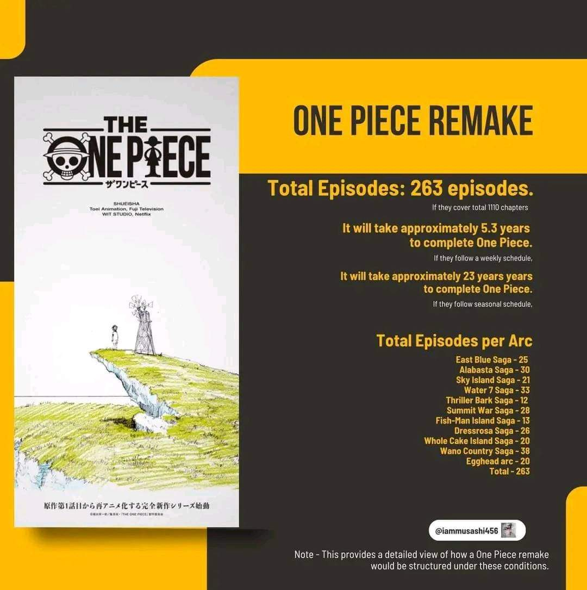

Noticias

Nuevo Arco en One Piece
¡El próximo arco de One Piece está a la vuelta de la esquina! Prepárate para nuevas aventuras y sorpresas en el mundo de los piratas.
Leer MásBienvenido a Sombreros de Paja
Explora el mundo de One Piece con nosotros